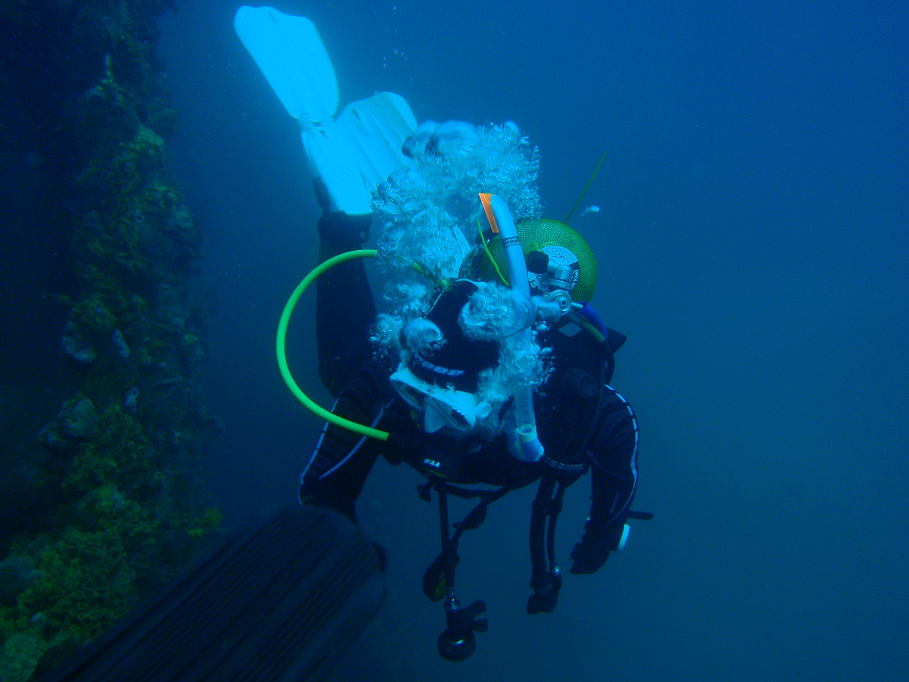

Dive Smarter, Thrive Deeper My journey into scuba diving began with a thrilling Discover Scuba experience in Malaysia, where I first marveled at clownfish and reef sharks... By YODO Diver April 7, 2025
Top Diving Spots Around the Globe The world's oceans are brimming with breathtaking dive sites, each offering a unique underwater adventure... By Wikipedia April 2, 2025
How a Buoyancy Compensator Works in Scuba Diving Buoyancy control is the key to effortless diving, letting you hover weightlessly while protecting delicate corals... By Wikipedia March 30, 2025
Essential Tools for Scuba Diving Scuba diving relies on a range of specialized gear to make underwater exploration possible... By Wikipedia February 12, 2025 
All About Nemo Fish Clownfish, affectionately known as Nemos, share a remarkable bond with sea anemones... By Wikipedia January 1, 2025